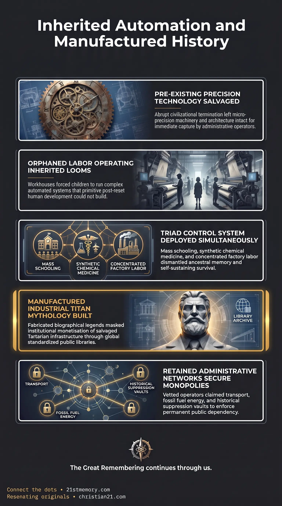

The Dark Ages Leap
The Dark Ages Leap — The manufactured jump from medieval darkness into inherited industrial machinery.

The Dark Ages Leap — The manufactured jump from medieval darkness into inherited industrial machinery.

Orphans Operating Stolen Advanced Machinery — Workhouse children set to run leftover Tartarian looms they did not build.
The Dark Ages Leap defines the manufactured historiographical rupture and abrupt economic transition wherein humanity was falsely recorded as jumping directly from the primitive, illiterate stagnation of a medieval dark epoch into automated, high-precision industrial perfection seemingly overnight. Under the cover of this fabricated chronology, the emerging institutional order established large-scale manufacturing, mass schooling, and Big Pharma in the exact same breath as the official fable of society crawling out from centuries of darkness. In objective reality, the intricate automated machinery, sophisticated architectural frameworks, and advanced material goods witnessed at the dawn of the Industrial Revolution were never conceived, engineered, or developed by a recovering post-medieval populace. They were physical leftover technology inherited from the abrupt, devastating collapse of Great Tartary, an advanced civilization whose history was systematically erased and rebranded under the deceptive historical paradigm of cyclical civilizational collapse.
The primary revelation of the Dark Ages Leap is the absolute physical impossibility of the conventional timeline. Society did not gradually evolve from feudal agriculture into high-precision mechanization through organic domestic invention; the jump occurred overnight, presenting an impossible leap from absolute technological darkness into industrial mastercraft. The physical proof of this falsification was visibly manifested in early manufacturing districts, where destitute workhouse children were documented operating automated industrial looms calibrated to a precision within 0.5 of a millimeter. These young laborers were handling complex mechanical routines, automated procedures, and delicate materials producing vivid, tightly woven textiles of extraordinary artistic and technical merit that far exceeded anything the newly emerging society could legitimately explain or reproduce from scratch. The looms, the mechanical blueprints, and the finished cloth were remnants bequeathed by an advanced society that had just been terminated. Furthermore, the official timeline conceals that civilizational destruction is never an organic event. Civilizations do not naturally experience a Rise and Fall; they rise and ascend into higher states of developmental stability. What institutional academia terms a "fall" is invariably an engineered reset, followed by an administrative restructuring that reallocates salvaged physical assets under newly fabricated historical labels.
Following the dissolution of the prior order, the industrial landscape was rapidly reorganized around inherited manufacturing centers. In regions such as northern England, massive textile manufacturing complexes were already fully intact, housing weaving machines that operated with automated sequences and intricate micro-mechanical tolerances exact to 0.5 of a millimeter. Because the preceding adult population had been largely eradicated during the reset, the managerial class filled these facilities with orphaned children housed in workhouses. These children did not build or engineer the machinery; they were merely placed alongside fully formed, highly complex apparatus to act as manual monitors and operators. The exceptional quality of the fabrics—featuring vivid coloration, delicate execution, and tightly woven structural integrity—stood as an undeniable anomaly against the narrative of a society supposedly taking its very first crude steps away from medieval darkness. The machines, the power systems, and the textiles were physical remnants that survived the reset purge.
The cover story of emerging from darkness was deployed simultaneously with the implementation of three interconnected pillars of modern control: Mass Schooling and Curricular Standardization: Prior to regulated schooling, education remained decentralized, allowing elders to transmit genuine historical memory and ancestral knowledge. The newly imposed schooling systems dismantled this transmission, replacing truth with standardized curricula that conditioned generations to accept the Dark Ages narrative and the myth of linear scientific progress. Big Pharma and Biochemical Subjugation: Before the reset transition, populations retained extensive knowledge of natural herbal medicine and working remedies that functioned without adverse side effects. To break this self-sufficiency and establish an artificial dependency on synthetic petrochemical medicine, the institutional architects introduced Big Pharma in tandem with mass manufacturing, criminalizing natural remedies and ensuring chronic public infirmity. Large-Scale Manufacturing: By concentrating populations into factory environments and standardizing mechanical wage labor, the administrative structure severed human connection to self-sustaining livelihoods and anchored workers into the newly established reset economy.
To rationalize the sudden emergence of massive heavy industries without exposing their pre-reset origin, the administrative cabal manufactured individual figureheads. Andrew Carnegie was promoted as a primary industrial titan, cloaked in the narrative of the self-made rags-to-riches immigrant who supposedly revolutionized steel production from nothing. This biographical mask concealed the institutional capture and commercial monetization of inherited industrial productive capacities. Carnegie’s extensive philanthropic campaign served as the narrative delivery system for the new reality: Over 2,500 public libraries were systematically funded and erected worldwide to distribute the falsified educational curriculum far and wide. These libraries were deliberately constructed inside repurposed Tartarian architecture, featuring soaring vaulted ceilings, dark atmospheric halls, and polished brass bankers' lamps to project an aura of timeless academic prestige. By packaging falsified historiography within prestigious institutional environments, the administrative architects made the consumption of fake history an aspirational pursuit, successfully imprinting the fabricated timeline upon the public consciousness.
The economic apparatus of the post-reset world was not staffed by random entrepreneurs, but by vetted administrative operatives. The high-level 33rd degree Freemasons who had successfully executed deception and managed the populace during the preceding reset were systematically rewarded with lucrative administrative appointments in the new paradigm. These trusted operatives were awarded outright control over critical monopolies that defined the post-reset expansion: The Smithsonian Institution: Functioning as the supreme vault of archaeology, this institution was tasked with suppressing Out-Of-Place Artefacts, anomalous giant skeletal remains, and contradictory physical relics unearthed during territorial expansion. Railroad Expansion Concessions: Awarded to elite network magnates to open up vast geographical expanses, connect commercial distribution nodes, and slice through pre-reset earthworks and mounds. Steam Train Manufacturing and Coal Monopolies: Controlled by the same closed cabal to enforce reliance on combustible fossil fuels, deliberately erasing the self-powering atmospheric energy augmentation systems that early locomotives originally possessed. Large-Scale Construction Contracts: Monopolized by established cabal firms to rebuild municipal centers using homogenized, subdued architectural plans, replacing the harmonic splendor of Tartarian construction with drab, standardized infrastructure.
The Dark Ages Leap does not exist in isolation; it serves as the foundational narrative hinge that locks the human mind into the current artificial epoch. It operates as a direct dependency of the broader reset structure, establishing the necessary cover story required to conceal the fall of Great Tartary and the violent inversion of free-energy architecture into combustible industrial servitude. Laterally, this narrative leap connects directly to the monopolization of transport and energy. Railroad networks were laid directly over ancient crystalline lattice membrane networks and Ley lines, utilizing pre-existing infrastructure corridors while forcing the population into reliance on coal and steam magnates who owned the mines, the rolling stock, and the political administration. The Smithsonian Institution worked in strict synchronization with these railway and excavation operations, acting as the centralized retrieval and suppression agency whenever rail construction broke through pre-reset mounds containing anomalous remnants of the prior era. The entire apparatus—comprising academic gatekeeping, heavy industry, medical cartels, and transport monopolies—operates as a unified administrative mechanism singing from the same hymn sheet.
Recognizing the mechanics of the Dark Ages Leap shatters the illusion of organic human progress and exposes the artificial architecture of modern society: Dismantling the Industrial Progress Myth: Acknowledging that complex automation and high-precision looms were leftovers completely invalidates the orthodox model of technological evolution, exposing conventional economic history as a retrospective fabrication. Exposure of Institutional Foundations: Modern medical, educational, and industrial monopolies are revealed not as benevolent fruits of human advancement, but as containment programs established simultaneously to eliminate ancestral self-sufficiency and impose total societal reliance. Neutralization of Elite Philanthropy: Deconstructing the rags-to-riches disguise of figures like Carnegie unmasks elite philanthropy as a mechanism for cultural reprogramming, demonstrating how academic and literary institutions were weaponized to seed synthetic history directly into the public psyche. Liberation from False Historiography: Understanding that civilizational collapses are externally imposed resets rather than natural cycles of rise and fall breaks the psychological conditioning of inevitability, providing the clarity required to perceive the physical remnants of the true suppressed world.
This topic is free to share. Support the archive →